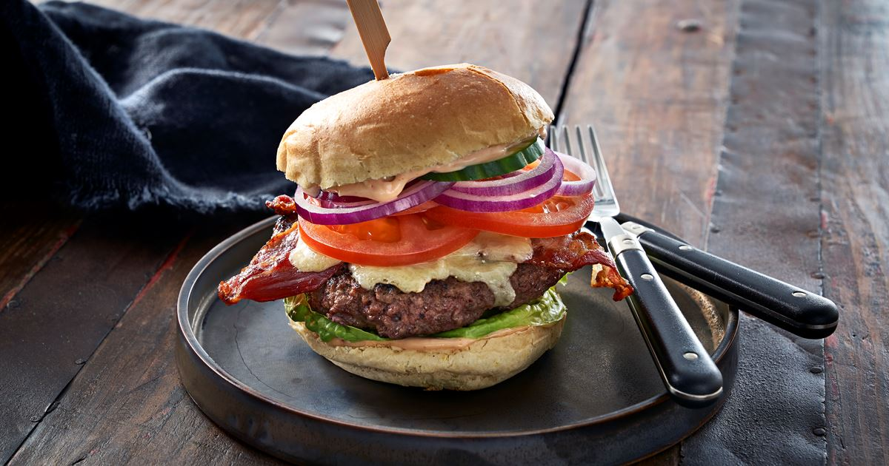

Burger recipe

Description
The big and not so healthy burger for your needs. Perfect for at day with the boys and some football
Jalapeno pepper
4 pounds of beef
1 egg
1/2 cup of steaksauce
buns
8 slices of pebberjack cheese
Directions
Preheat a grill for high heat. When the grill is hot, roast the jalapeno peppers until blackened on all sides. Place in a plastic bag to sweat and loosen the blackened skin. Rub the skin off, then seed if desired, and chop.
In a large bowl, use your hands to mix together the chopped jalapenos, ground beef, salt, pepper, egg, steak sauce, onion, hot pepper sauce, oregano, Worcestershire sauce, garlic salt and Fritos®. Divide into 8 balls, and flatten into patties.
Grill patties for 10 to 15 minutes, turning once, or until well done. I always drink one beer, then flip, drink another beer, then remove from the grill and place on buns. Top each one with a slice of pepperjack cheese and pig out!